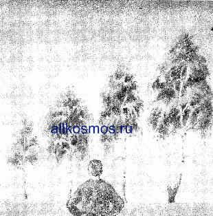
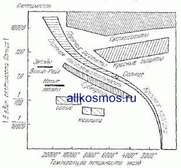

Изучение жизни космических тел
Многочисленные вестники далеких миров приносят нам ценнейшие сведения о Вселенной. Но эти сведения оставались бы просто набором разрозненных фактов, если бы человек не умел анализировать их, обнаруживать всевозможные связи между ними, раскрывать закономерности, ими управляющие, если бы он не обладал способностью мыслить. Именно разум человека позволил ему создать те замечательные приборы и инструменты, с помощью которых улавливаются и расшифровываются почти все вестники Вселенной.
Но мало того. Далеко не все явления в окружающем пас мире можно непосредственно наблюдать. И далеко не каждое событие, которое мы наблюдаем во Вселенной, непосредственно вытекает из какого-либо другого, нам уже известного. В таком случае на помощь исследователю приходит научная теория. Она позволяет вскрывать зависимости между различными явлениями и процессами, восстанавливать недостающие звенья, предвидеть новые факты, исследовать такие задачи, которые нельзя решить с помощью одних лишь наблюдений и измерений. Именно теория освещает путь дальнейших исследований и концентрирует усилия ученых в определенных направлениях, ставит перед ними первоочередные задачи, нацеливает па поиски определенных фактов.
Теория не может существовать без фактов, без данных наблюдений; без них она превратилась бы в пустые логические упражнения, в решения умозрительных задач, не содержащие в себе никаких сведений об окружающем мире но и простой калейдоскоп фактов без теоретического осмысления, без выяснения ведущих закономерностей, управляющих этими фактами, принес бы мало пользы исследователям природы. Наблюдения и теоретические исследования в современной науке — это близнецы, которые не могут существовать друг без друга.
Характер теоретических исследований в современной астрономии весьма разнообразен. Здесь можно встретить и математические выкладки, и статистические подсчеты — обобщение результатов многочисленных наблюдений, и оригинальные гипотезы и смелые догадки. Конечной целью подобных исследований является составление и решение уравнений, как можно более точно описывающих тот или иной процесс. В основе же почти всех теоретических изысканий лежит так называемый метод сравнения…
Существует старинная легенда о короле, который однажды задал своим «мудрецам» нелегкую задачу. Пригласив их во дворец, он указал им на большой каменный шар, лежавший посреди двора, и попросил определить, что находится внутри него. Один за другим пытались «мудрецы» разрешить трудную загадку. Сутками напролет просиживали они наедине с шаром, пристально вглядываясь в него и стараясь силой мысли проникнуть внутрь камня. И один за другим удалялись, понурив голову, так и не справившись с заданием. Так продолжалось до тех пор, пока среди «мудрецов» не нашелся действительно мудрый человек. Он приказал разложить под загадочным шаром костер и нагревал его до тех пор, пока раскаленный камень не треснул и шар не распался на две половинки. И тогда все увидели, что внутри шара нет ничего, кроме камня…
Мудрец из легенды поступил совершенно правильно. Если какой-либо предмет абсолютно неподвижен, если с ним ничего не происходит, если его современное состояние мы не можем сравнить с другими его состояниями, то мы о нем мало что сможем узнать. И когда ученые ставят тот или иной эксперимент, они как раз изменяют состояние интересующего их объекта. Иногда можно обойтись и без эксперимента. Его заменяют наблюдения за теми изменениями, которые с течением времени происходят с самим объектом в природе. Разумеется, подобный способ, как правило, приводит к цели значительно медленнее. Но бывает и так, что он вообще практически неприменим: в тех случаях, когда изменения, интересующие ученых, протекают слишком медленно, настолько медленно, что их невозможно проследить за сколько-нибудь реальные сроки.
Именно в таком положении находятся астрономы. Подавляющее большинство космических тел и космических систем развиваются чрезвычайно медленно в сравнении с масштабами человеческой жизни. Продолжительность существования звезды или галактики исчисляется миллиардами лет. Столетие в «жизни» подобного объекта — все равно что секунда в жизни человека. Не удивительно, что исследователь, наблюдающий за какой-либо звездой даже десятки лет подряд, в большинстве случаев не обнаруживает в ее состоянии заметных изменений. Положение существенно не изменилось бы и в том случае, если бы за такой звездой наблюдали не отдельные ученые, а даже несколько последовательных поколении астрономов. Подобный способ изучения эволюции космических тел потребовал бы чудовищных сроков в десятки и сотни миллионов лет.
Положение астронома в этом смысле можно сравнить с положением человека, которому поручили в течение одних суток изучить развитие какой-либо породы дерева, например, березы или сосны. На первый взгляд подобная задача представляется вообще неразрешимой.
Одни сутки в жизни березы — такой же малый промежуток времени, как сотни лет в жизни звезды. Нетрудно догадаться, что за сутки с березой не произойдет каких-либо существенных изменений, на основании которых можно было бы судить об особенностях ее развития.
И тем не менее задачу все же можно решить. Решить методом сравнения. Для этого надо пойти в лес, отыскать там несколько берез различного возраста, мысленно расположить деревья в порядке его увеличения и по этому «возрастному ряду» сделать вывод о развитии березы вообще.
Примерно так же могут поступать и астрономы. В мире звезд мы встречаемся с объектами разного возраста. Поэтому, чтобы судить об эволюции небесных тел, надо разделить их на классы однотипных объектов и внутри каждого такого класса составить «возрастной» ряд.
Фактически подобный ряд будет представлять собой то же самое, что и ряд следующих друг за другом во времени состояний одной и той же звезды.
Разумеется, это лишь принцип подхода к решению задачи. Практически же астрономы поступают следующим образом. Сравнение звезд ведется по двум физическим характеристикам, которые в наибольшей степени отражают состояние этих небесных тел. Характеристики, о которых идет речь: поверхностная температура и светимость, т. е. количество света, излучаемое звездой в сравнении с Солнцем, светимость которого условно принимается за единицу. И поверхностная температура, и светимость в процессе эволюции звезды постоянно меняются, отражая те качественные превращения, которые происходят в ее физическом состоянии.
Составляется специальная диаграмма — диаграмма «температура — светимость» или, как ее чаще называют, диаграмма «спектр — светимость». По горизонтальной оси откладывают поверхностью температура звезд, по вертикальной — их светимости. Таким образом, каждая звезда в соответствии со своими физическими свойствами изображается на диаграмме некоторой точкой. В верхней левой части располагаются точки, изображающие звезды с высокой светимостью и высокой температурой, а в правой нижней — «холодные» звезды, излучающие мало света.
Нанося на подобную диаграмму физические характеристики большого числа звезд, астрономы тем самым как бы собирают большой сравнительный материал. Анализ этого материала позволяет сделать важные выводы о закономерностях развития звезд.
Так, например, положение каждой точки на диаграмме определяется возрастом данной звезды; оно зависит от того, на каком этапе своего развития эта звезда находится. Чтобы узнать, какое положение занимала эта точка в прошлом и куда она переместится в будущем, астрономы прибегают к остроумному приему. Известно, что звезды одного скопления имеют приблизительно одинаковый возраст. Значит, сравнивая диаграммы спектр — светимость, составленные для различных скоплений — «старых» и «молодых», можно выяснить, в каких направлениях эволюционируют звезды.
Метод сравнения оказал неоценимую помощь астрономам и при решении такой сложнейшей задачи, какой является изучение нашей Галактики — гигантского звездного острова, к которому принадлежит и наше Солнце. Главная трудность, с которой встречаются здесь ученые, состоит в том, что мы сами находимся внутри этой звездной системы и далеко не все ее области доступны современным методам наблюдений.
Представьте себе человека, который впервые в жизни приехал в незнакомый город и которого попросили составить подробный план этого города, не выходя за пределы одной из городских площадей. Очевидно, при таких условиях задача неразрешима. Чтобы справиться с ней, нужно либо подняться в воздух и взглянуть на город сверху, либо последовательно пройти по всем его улицам, переулкам и площадям.
Но, к сожалению, для исследования Галактики ни один из этих способов, по крайней мере в настоящее время, неприменим. Мы не можем ни вылететь за пределы этой звездной системы и посмотреть на нее со стороны, ни последовательно побывать в разных ее точках.
Но есть еще один путь. Изучать различные звездные острова Вселенной и сравнивать их друг с другом и с нашей Галактикой. В строении различных галактик имеются сходные черты, а их развитие подчиняется общим закономерностям. Поэтому сравнение с ними позволит многое узнать о нашем собственном звездном острове.